Comprehensive historical air quality profiling and data health audit for Pune, India | Generated: 2026-10-21T18:19:25.015381
| Pollutant | Valid Count | Mean | Std | Min | Median | Max | Skewness |
|---|---|---|---|---|---|---|---|
| AQI | 2407 | 101.59 | 77.81 | 0.0 | 84.3 | 401.0 | 2.01 |
| PM25 | 2013 | 64.03 | 145.37 | 0.0 | 36.5 | 2078.7 | 6.8 |
| PM10 | 1339 | 98.7 | 283.42 | 0.0 | 72.0 | 7795.4 | 20.63 |
| NO2 | 1932 | 31.76 | 66.46 | 0.0 | 16.6 | 500.0 | 6.06 |
| CO | 1195 | 1.44 | 1.29 | 0.0 | 1.0 | 9.6 | 2.22 |
| SO2 | 1293 | 6.84 | 15.08 | -58.9 | 3.4 | 440.9 | 18.99 |
| O3 | 1195 | 54.91 | 79.35 | 0.0 | 44.6 | 1670.0 | 14.96 |
| Station ID | Station Name | Observations | Temporal Coverage | Continuity | Mean AQI |
|---|---|---|---|---|---|
| 5661 | Karve Road Pune, Pune - MPCB | 1772 | 2018-03-09 to 2025-05-23 | 67.3% | 109.52 |
| 11613 | Revenue Colony-Shivajinagar, Pune - IITM | 947 | 2020-11-13 to 2026-01-28 | 49.76% | 110.42 |
| 3409436 | Park Street Wakad, Pimpri Chinchwad - MPCB | 345 | 2025-02-18 to 2026-01-28 | 100.0% | 97.47 |
| 3409438 | Katraj Dairy, Pune - MPCB | 344 | 2025-02-19 to 2026-01-28 | 100.0% | 81.45 |
| 3409439 | Savitribai Phule Pune University, Pune - MPCB | 343 | 2025-02-18 to 2026-01-26 | 100.0% | 87.37 |
| Field | Valid Records | Null Count | Missing Percentage |
|---|---|---|---|
| station_id | 3751 | 0 | 0.0% |
| station_name | 3751 | 0 | 0.0% |
| observation_date | 3751 | 0 | 0.0% |
| aqi | 2407 | 1344 | 35.83% |
| pm25 | 2013 | 1738 | 46.33% |
| pm10 | 1339 | 2412 | 64.3% |
| no2 | 1932 | 1819 | 48.49% |
| co | 1195 | 2556 | 68.14% |
| so2 | 1293 | 2458 | 65.53% |
| o3 | 1195 | 2556 | 68.14% |
| dominant_pollutant | 2407 | 1344 | 35.83% |
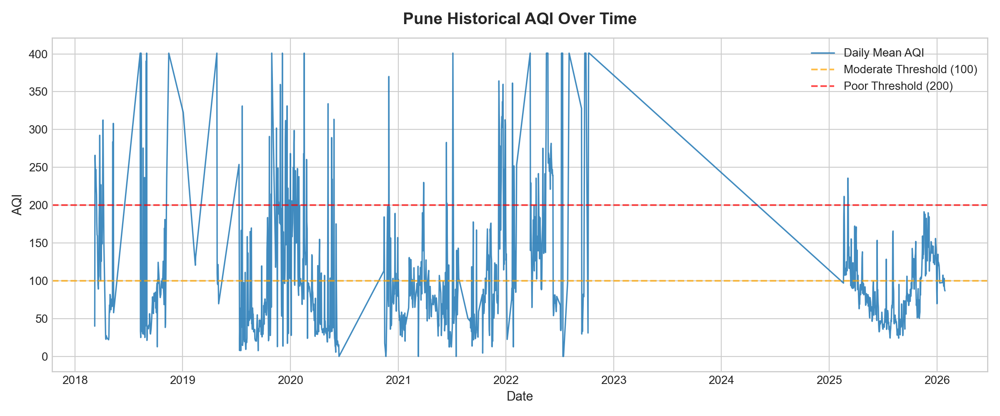
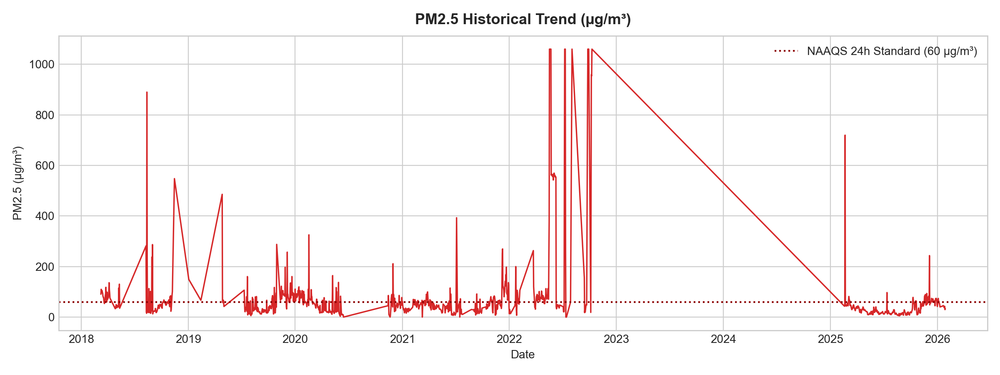
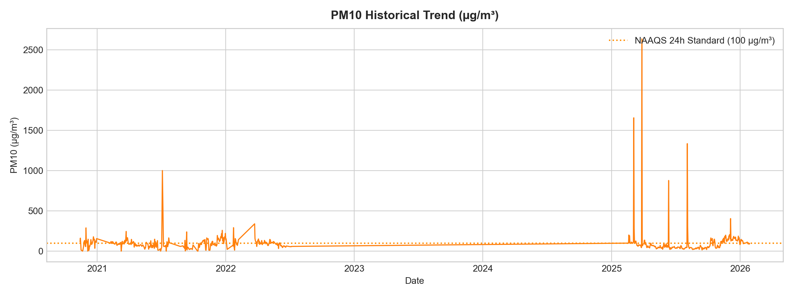
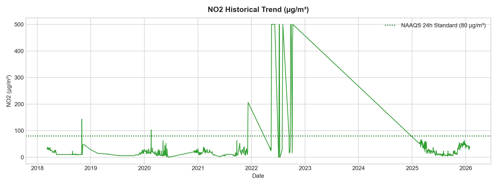
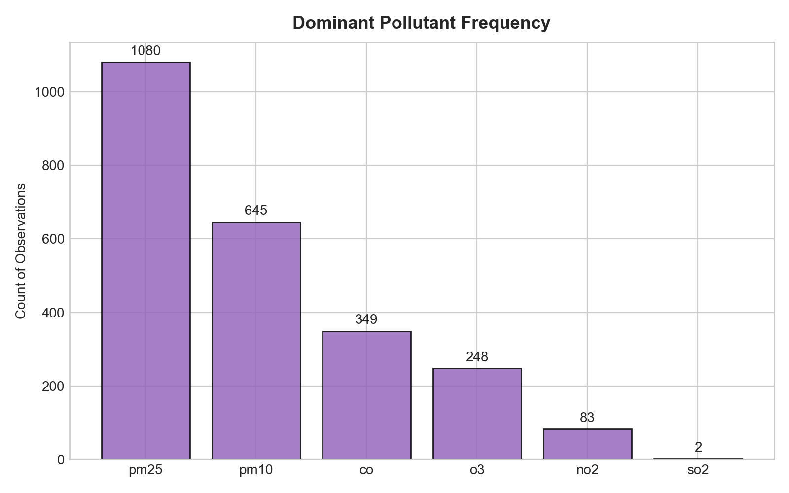
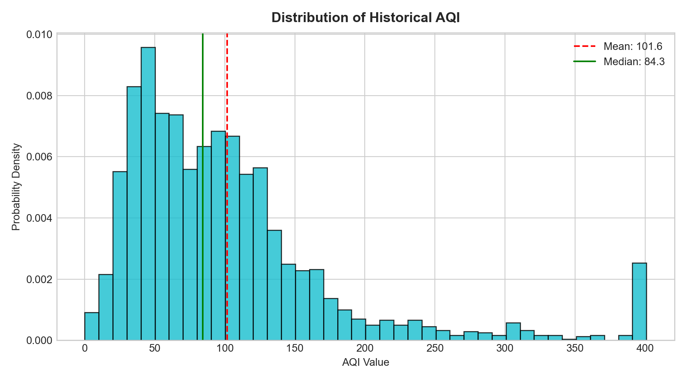
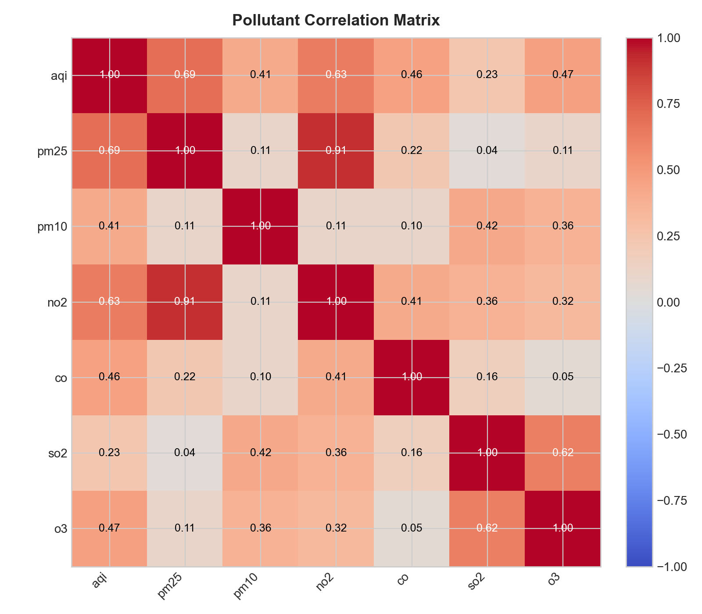
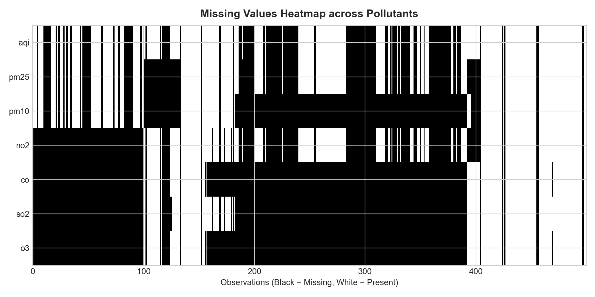
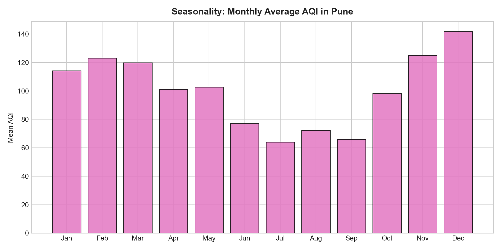
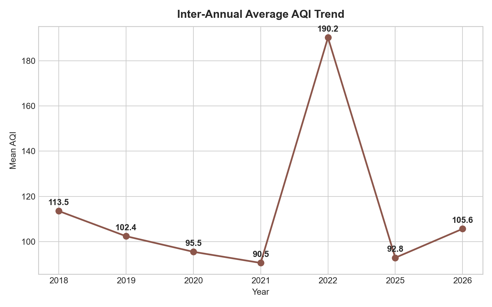
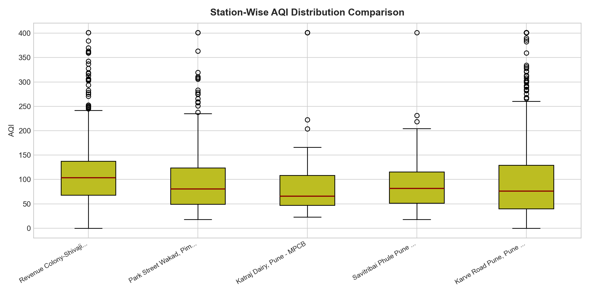